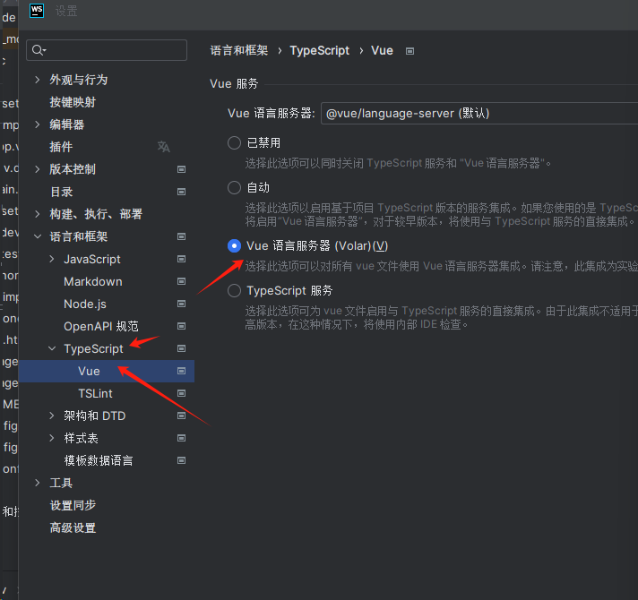

vite
目录
前端快速建项目，打包，编译的一个包
// 安装包
npm init vite@latest
// 使用vite建立项目
npm init vite@latest
// 运行命令
npm run xx
// 打包
vite build
使用插件
插件列表地址
如何使用
若要使用一个插件，需要将它添加到项目的 devDependencies 并在 vite.config.js 配置文件中的 plugins 数组中引入它。例如，要想为传统浏览器提供支持，可以按下面这样使用官方插件 @vitejs/plugin-legacy：
// 安装插件
npm i -D @vitejs/plugin-legacy
// 配置vite.config.js 文件
// vite.config.js
import image from '@rollup/plugin-image'
import legacy from '@vitejs/plugin-legacy'
import { defineConfig } from 'vite'
export default defineConfig({
plugins: [
legacy({
targets: ['defaults', 'not IE 11']
}),
{
...image(),
// 强制顺序， pre在vite 核心插件之前
// post 在vite核心插件之后（默认）
enforce: 'pre',
// 指定调用环境， 默认是开发和生成都调用
// build（生产） ,server（开发）
apply: 'build',
}
]
})
多页面构建
// 文件路径
├── package.json
├── vite.config.js
├── index.html
├── main.js
└── nested
├── index.html
└── nested.js
// vite.config.js
const { resolve } = require('path')
const { defineConfig } = require('vite')
module.exports = defineConfig({
build: {
rollupOptions: {
input: {
main: resolve(__dirname, 'index.html'),
nested: resolve(__dirname, 'nested/index.html')
}
}
}
})
使用环境变量
Vite 在一个特殊的 import.meta.env 对象上暴露环境变量。这里有一些在所有情况下都可以使用的内建变量：
import.meta.env.MODE: {string} 应用运行的模式。import.meta.env.BASE_URL: {string} 部署应用时的基本 URL。他由base 配置项决定。import.meta.env.PROD: {boolean} 应用是否运行在生产环境。import.meta.env.DEV: {boolean} 应用是否运行在开发环境 (永远与import.meta.env.PROD相反)。
.env文件
一般就在src目录下
.env # 所有情况下都会加载
.env.local # 所有情况下都会加载，但会被 git 忽略
.env.[mode] # 只在指定模式下加载
.env.[mode].local # 只在指定模式下加载，但会被 git 忽略
在生产环境中，这些环境变量会在构建时被静态替换，因此，在引用它们时请使用完全静态的字符串。动态的 key 将无法生效。import.meta.env[key] 是无效的。
注意： 只有以 VITE_ 为前缀的变量才会暴露给经过 vite 处理的代码
// 这个不会暴露出去
DB_PASSWORD=foobar
// 这个会暴露
VITE_APP_TITLE=123
// 获取环境配置
import.meta.env.VITE_APP_TITLE
环境变量配置提示
src 目录下创建一个 env.d.ts 文件
/// <reference types="vite/client" />
interface ImportMetaEnv {
readonly VITE_APP_TITLE: string
// 更多环境变量...
}
interface ImportMeta {
readonly env: ImportMetaEnv
}
注意： 这里我使用webstom 有时候配置了这个没有提示出来， 那我们需要配置下ts的配置改成vue语言服务器volar

编译打包的时候使用特定的环境变量
//package.json 配置文件
{
"name": "vue",
"private": true,
"version": "0.0.0",
"type": "module",
"scripts": {
// 在命令后面加上--mode 加上环境名称
"dev": "vite --mode dev",
"build": "vue-tsc && vite build --mode build",
"preview": "vite preview"
},
"dependencies": {
"element-plus": "^2.4.2",
"vue": "^3.3.4"
},
"devDependencies": {
"@vitejs/plugin-vue": "^4.2.3",
"typescript": "^5.0.2",
"unplugin-auto-import": "^0.16.7",
"unplugin-vue-components": "^0.25.2",
"vite": "^4.4.5",
"vue-tsc": "^1.8.5"
}
}